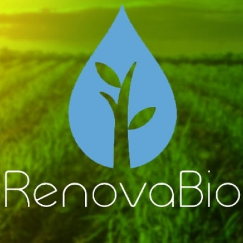
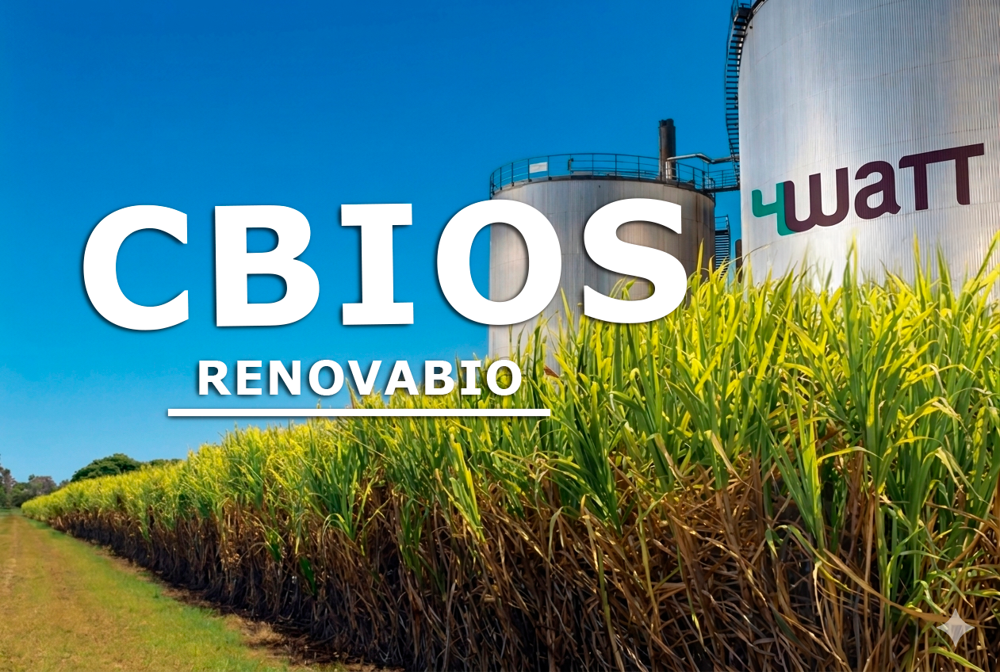
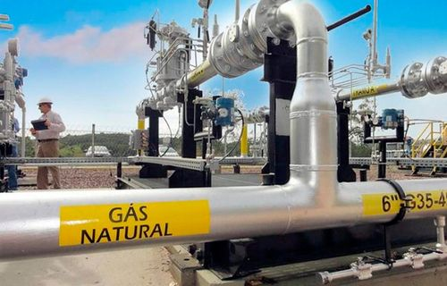
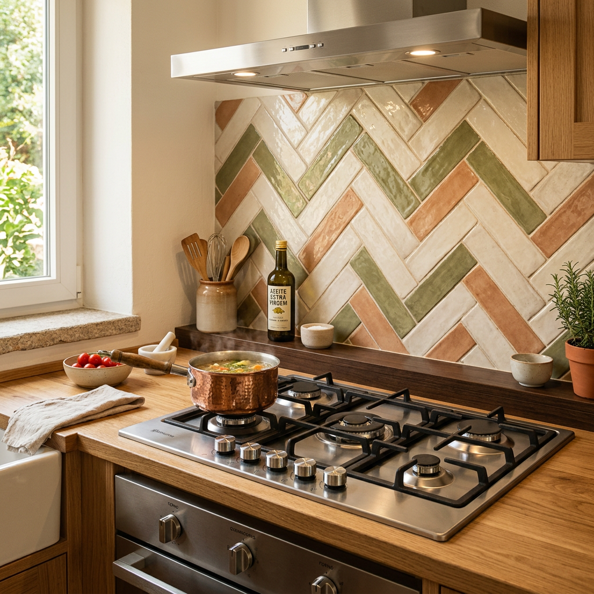

ANP 854/2021
Regulamenta as especificações de qualidade do biometano e os requisitos para produtores, distribuidores e medição fiscal. O marco legal do mercado.

Biometano certificado: da matéria-prima ao mercado. Produzimos, certificamos e estruturamos a venda do seu biometano.
A Resolução ANP 854/2021 estabeleceu as especificações técnicas e o arcabouço regulatório que tornam o biometano comercializável, substituindo diretamente o gás natural fóssil na indústria, no transporte e na geração de energia.
O mercado projeta crescimento de 15× até 2030 (Abiogás/EPE), com potencial de 70 bilhões de m³/ano, mais que o consumo atual de gás natural no país. No RenovaBio, o produtor ainda emite CBIOs, negociados na B3, que adicionam de R$ 50 a R$ 200/tCO₂e à receita.

Seis etapas de upgrading, medição e comercialização.
Composição típica: 55–70% CH₄, 30–45% CO₂, H₂S, umidade e traços de COV. É o ponto de partida do upgrading.
Dessulfurização (biológica ou química), remoção parcial de CO₂, condensação/remoção de umidade e filtragem de particulados, protege equipamentos e aumenta eficiência.
Separação de CO₂ por PSA (Pressure Swing Adsorption) ou membranas poliméricas. A tecnologia depende de escala, pureza e custo operacional, ambas atendem à ANP 854/2021.
Mínimo de 97% de CH₄ conforme ANP 854/2021. Coleta periódica para cromatografia em laboratório credenciado, com laudos rastreáveis.
Sistema de Medição Fiscal (SMF) homologado pela ANP, registro no RenovaBio e emissão de CBIOs proporcional à produção e à intensidade de carbono. 1 CBIO = 1 tCO₂e.
Injeção na rede de gás natural · compressão para CNG (veicular) · liquefação para LNG (longa distância) · entrega direta a consumidor industrial. Estruturamos os contratos de venda.
| Parâmetro | Especificação ANP 854/2021 | Tecnologia 4WaTT |
|---|---|---|
| Metano (CH₄) | Mínimo 96,5% (v/v) | 97–99% |
| Dióxido de carbono (CO₂) | Máximo 3% (v/v) | <2% |
| Sulfeto de hidrogênio (H₂S) | Máximo 10 mg/m³ | <5 mg/m³ |
| Poder calorífico superior (PCS) | Mínimo 34,0 MJ/m³ | 35–38 MJ/m³ |
| Pressão de entrega | Conforme ponto de medição fiscal | 5–25 bar |
| Fluxo mínimo operacional | Não especificado pela ANP | A partir de 500 Nm³/dia |
| Medição fiscal | Sistema homologado pela ANP | SMF com telemetria em tempo real |
Regulamenta as especificações de qualidade do biometano e os requisitos para produtores, distribuidores e medição fiscal. O marco legal do mercado.

Política Nacional de Biocombustíveis (Lei 13.576/2017). Produtores registrados recebem o Certificado de Produção Eficiente (CPE) e emitem CBIOs.

Crédito de Descarbonização negociado na B3. Cada CBIO = 1 tonelada de CO₂e evitada · receita adicional conforme a demanda das distribuidoras.
Substituição de gás natural fóssil, redução de emissões e acesso a mercados de baixo carbono.
Biometano como CNG veicular para frotas urbanas e intermunicipais · menos custo e menos CO₂.

Combustível para grupos geradores ou turbinas a gás, com alta densidade energética.

Injeção na rede para cumprir metas de biocombustíveis e descarbonizar o portfólio.

Substituição de GLP para uso em cozinhas, limpeza e chuveiros.
Biogás é produzido diretamente pelo biodigestor (55–70% CH₄, 30–45% CO₂ e impurezas). Biometano é o biogás após upgrading (97%+ de metano), equivalente ao gás natural, pode ser injetado na rede ou usado como combustível veicular.
Estabelece (1) especificações de qualidade; (2) requisitos para registro de produtores; (3) regras para o sistema de medição fiscal; (4) procedimentos de análise laboratorial periódica. A 4WaTT acompanha todo o processo de registro e conformidade.
Quatro alternativas: venda direta a consumidor industrial por gasoduto dedicado; injeção na rede da concessionária; compressão para CNG (frotas); liquefação para LNG (caminhão). A 4WaTT estrutura o modelo comercial junto ao projeto técnico.
O CBIO (Crédito de Descarbonização) é um ativo financeiro do RenovaBio. 1 CBIO = 1 tCO₂e evitada, negociado na B3, com valor histórico de R$ 50 a R$ 200. Produtores no RenovaBio emitem automaticamente, proporcional à produção verificada.
A viabilidade econômica começa tipicamente a partir de 500 Nm³/dia de biometano. Abaixo disso, custos fixos de equipamentos, manutenção e certificação comprometem o retorno. Plantas entre 500 e 5.000 Nm³/dia têm os melhores indicadores. A 4WaTT faz o dimensionamento específico.
Avaliamos o potencial do seu biogás e apresentamos alternativas de upgrading, certificação e comercialização.
Preencha e retornamos em até 24h.